Prime Grid Atlas 1.1.0 Integrity, Reproducibility & Reliability Update — integrated examples, not a published release.
Source S: eaf6c433722521c5f0dd6a6b07e112e643b5d05b. Real desktop captures and native exports; no altered raster assets. Browser fitting changes only display size; click an image for its native resolution.
Reproduction · Validation · Privacy
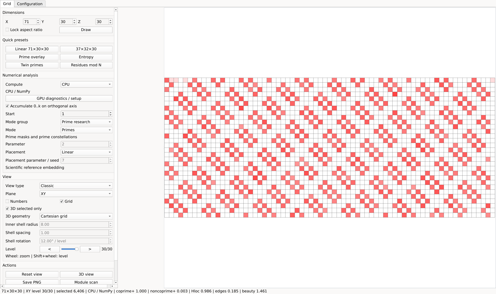
Prime-hit occupancy projected from a Linear 71 × 30 × 30 volume, Start = 1, across all 30 layers. 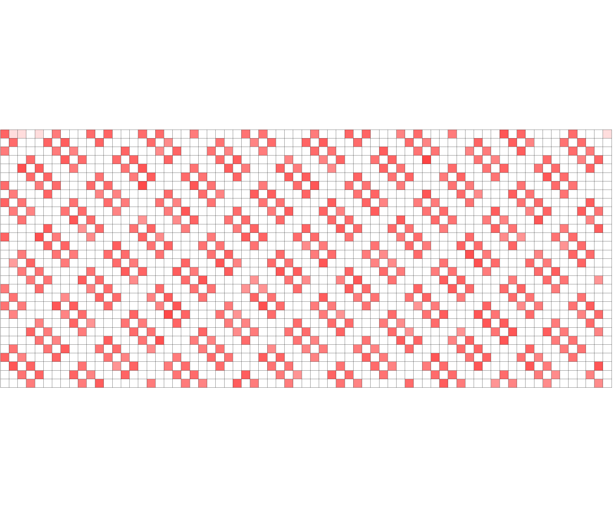
Native prime viewport export: 564 occupied projected cells among 2130; intensity reflects cumulative hits. 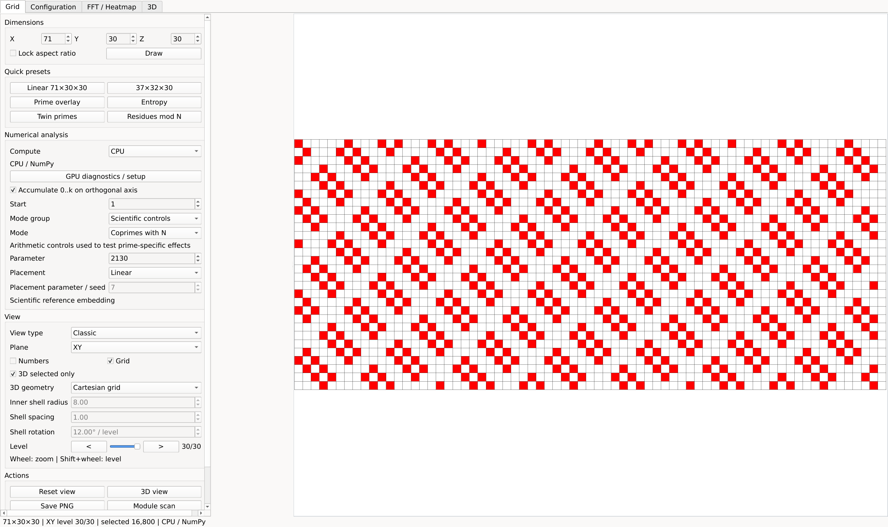
Coprime support for M = 2130: admissibility under gcd(n, M) = 1, not a primality claim. 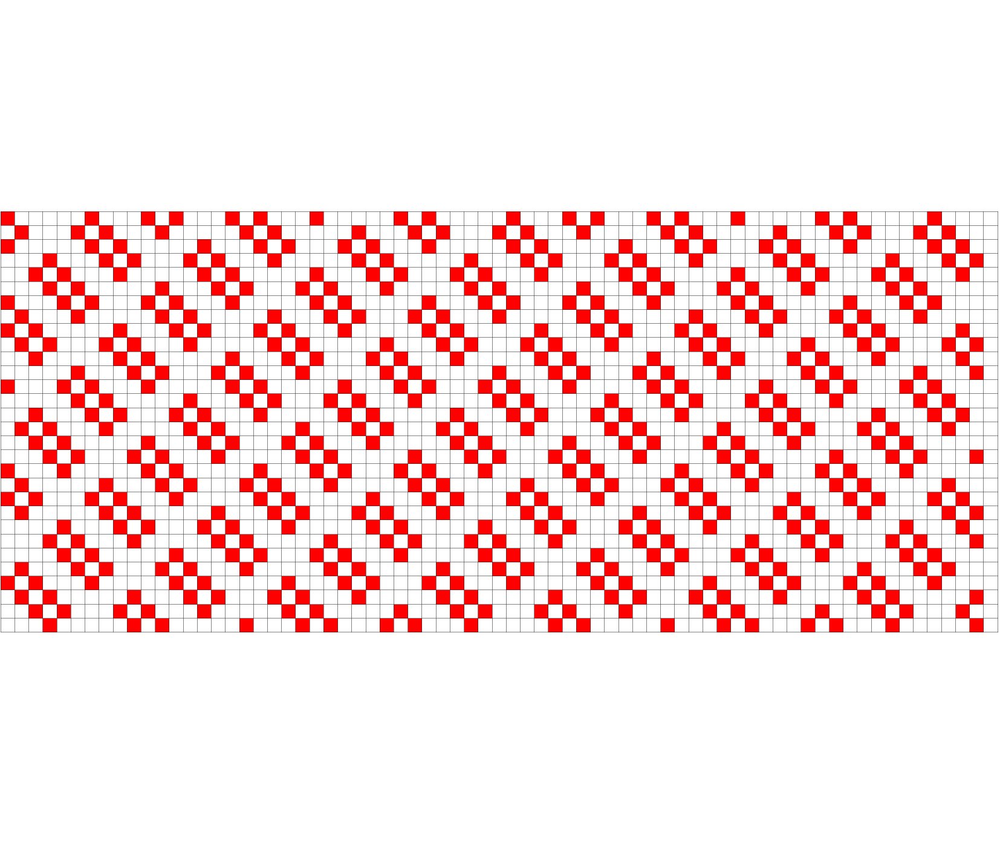
Native coprime viewport: 560 admissible projected cells, constant through 30 layers. 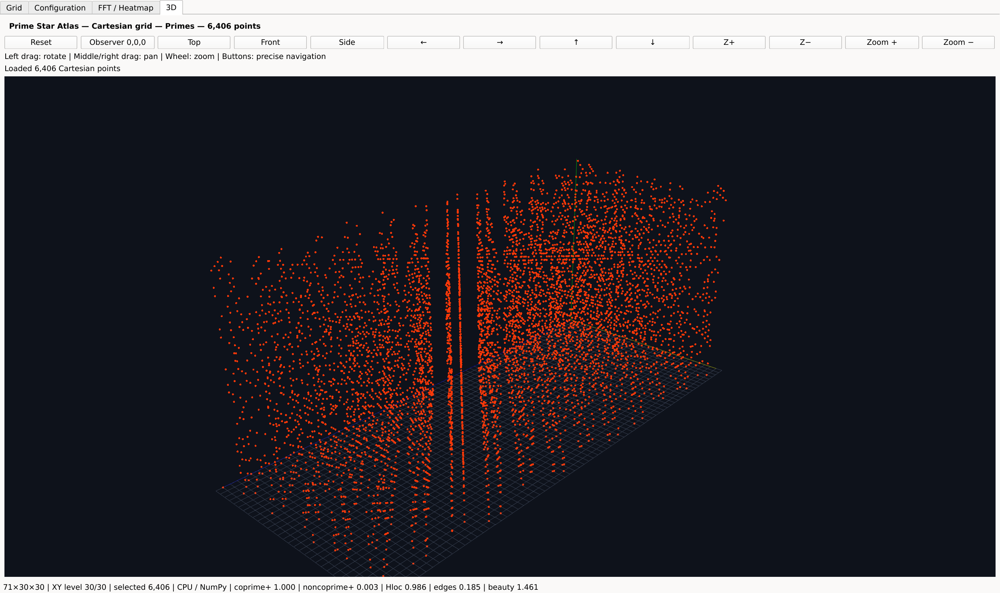
Actual OpenGL view of 6406 selected prime cells in the Cartesian volume; no subsampling. 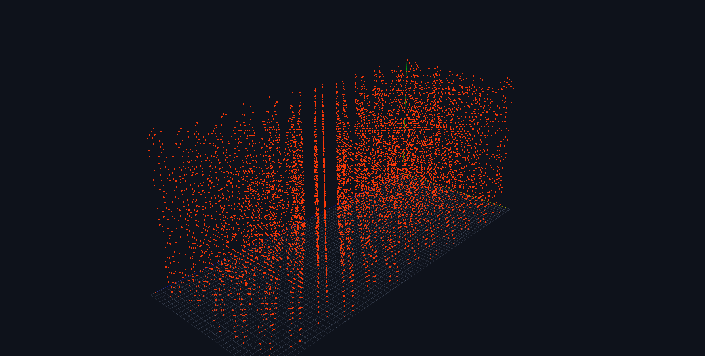
Native OpenGL framebuffer of the same 6406 submitted prime positions; perspective and occlusion apply. 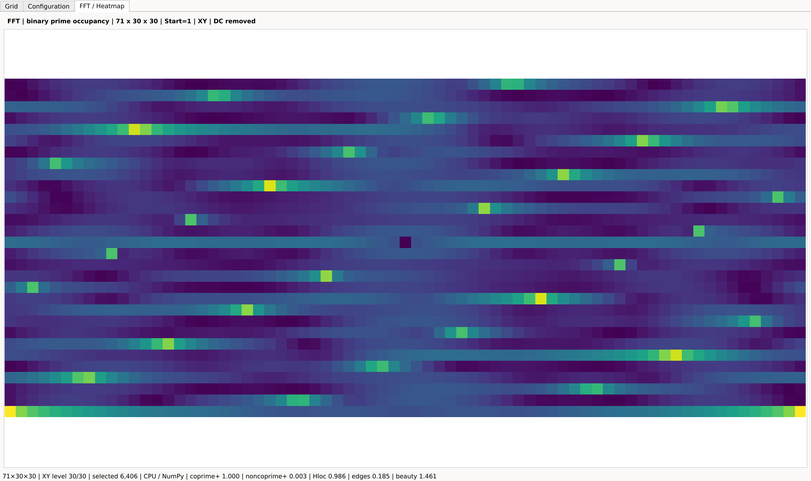
Mean-centered binary occupancy FFT power, DC removed, displayed as log1p power; qualitative application view. 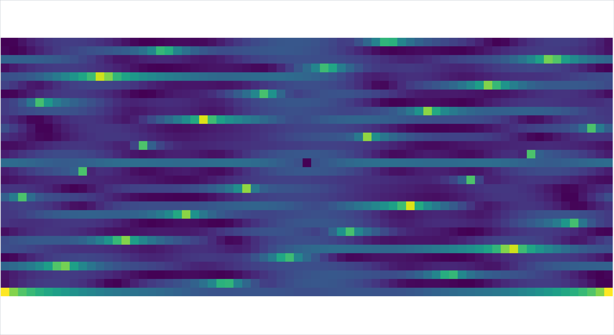
Actual FFT viewport without quantitative frequency axes or colorbar; numerical matrix supplied separately. 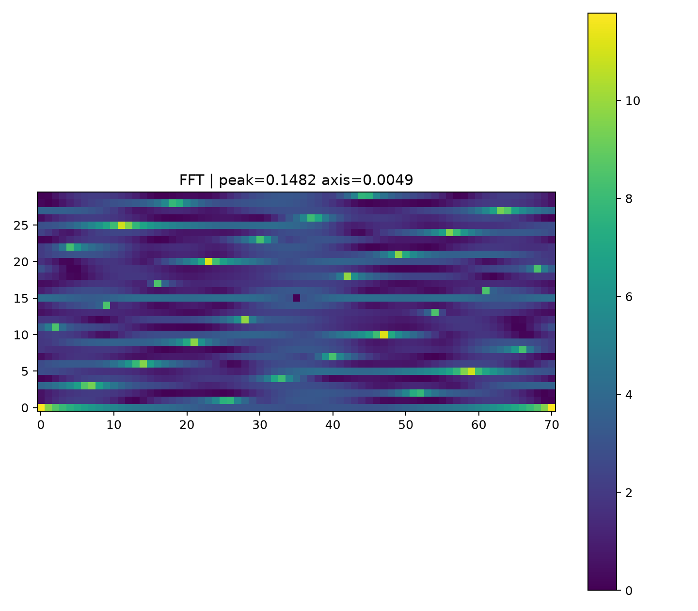
Native Matplotlib FFT export with array-index axes and colorbar for log1p power. 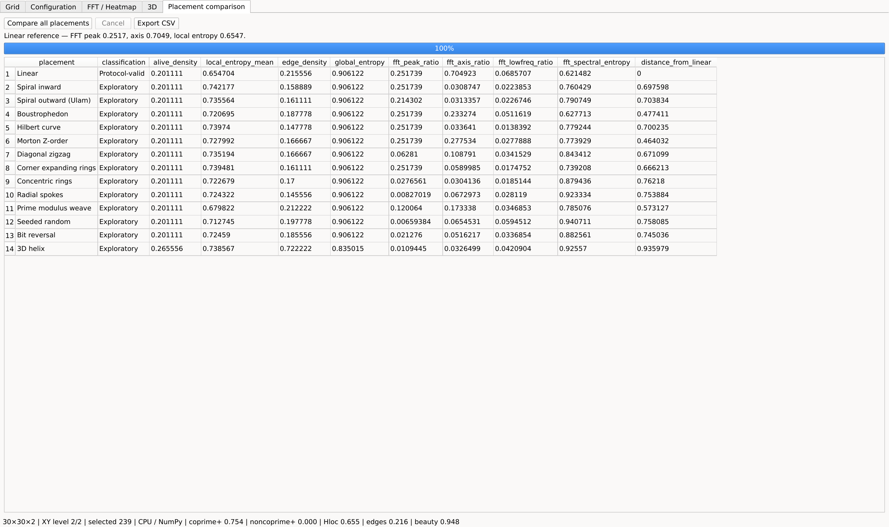
Fourteen placements of one integer interval; descriptive geometric metrics relative to Linear, not a significance test. 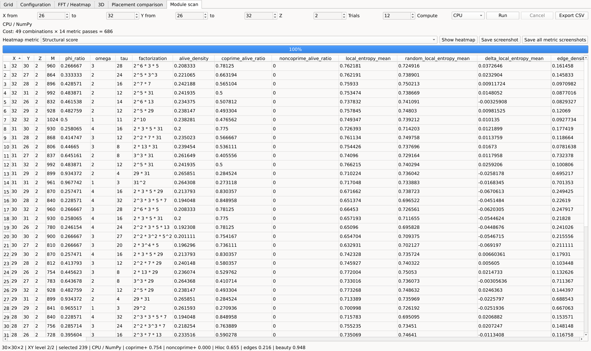
Completed CPU scan of 49 X/Y pairs at fixed depth; visible table excerpt, with complete CSV supplied.